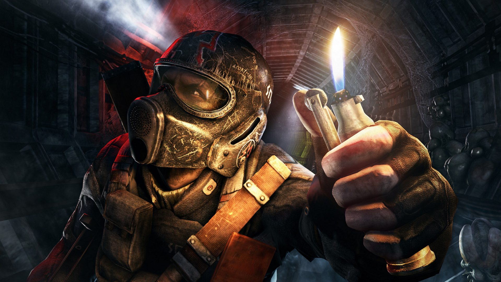

Metro Exodus es un shooter argumental de primera persona de 4A Games
que ofrece combates mortales y sigilo, así como exploración y
supervivencia en un mundo envolvente y horripilante.

Personajes
Metro Exodus se desliza a través de una historia épica llena de
personajes inolvidables. Durante tu viaje por Rusia, congeniarás con
tus compañeros de viaje y descubrirás nuevos aliados para la causa.
A medida que avanzas, te enfrentarás a enemigos siniestros en el
campo de batalla...